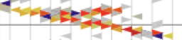

Dr. Nathaniel Tagg 
I am an experimental particle physicist, used to working in teams and with large collaborations. I use software to simulate, calibrate, control, and acquire data from hardware (such as massive, complex particle detectors). I am expert with data analysis, data acquisition, databases, and visualization. I have created everything from hardware interfaces to web applications, both close-to-the-metal resource-intense computing and high-level GUIs. I am adept at mastering new systems and technologies. I am an expert teacher and presenter and I excel at engaging all kinds of audiences.
Skills
Programming: Expert in C/C++, Javascript, HTML/CSS, Python, Perl, bash, FORTRAN.
Technical: Data visualization via web-based and 3d technologies, UNIX systems and sysadmin, web technology (full stack), high-throughput data acquisition, data monitoring, Git/Subversion/CVS, Google/Azure APIs. AWS. SSH. Database access and table design (MySQL, Postgres, SQLite, MongoDB), parallel processing. Hardware: Expert on photomultiplier and related optical sensors, scintillators, liquid argon time projection chambers, semiconductor radiation counters, basic analog/digital circuits, microprocessors.
Scientific: Nuclear and particle physics. Understanding of statistics and data analysis of large data sets - particularly multivariate fits and uncertainty estimation, detector calibration, data reconstruction, blind analysis techniques, successful grant writing, technical writing.
Interpersonal: Years of experience mentoring, teaching, advising, collaborating long-distance, and leading groups within large multinational scientific collaborations.
Job History
Professor, Otterbein University - 2008-2021
Teaching, research, and service to the university and scientific communities. Developed courses and curricula. Created educational simulations to illustrate electric fields and wave propagation for undergraduates. Invented a full-stack database tools to aid faculty in advising students. Awarded continuous NSF research funding for 15 years, directly supporting work on the large international MINERvA, MicroBooNE and DUNE experiments. Notable contributions included creation of 2- and 3-D interactive event display software, creation, development and maintenance of highly-parallel near-time detector monitoring, contributions to event reconstruction and core software support, and public outreach.
Promoted to Full Professor two years early.
Chair of Physics, Otterbein University - 2016-2020
Responsible for personnel, budget, and assessment/review.
Visiting Professor, Tufts University - 2006-2008
Research assistant, Brookhaven National Lab - 2007-2008
Research on the MINOS and Daya Bay experiments. Notable projects include measurement of the time-of-flight of neutrinos over 450 miles, development of monte-carlo simulations, leader of scientific task force for detector calibration, and authorship of software for managing detector calibration databases.
Postdoctoral Research Assistant, Oxford University (UK) - 2000-2006
Responsible for system used to establish nanosecond time synchronization, development of an optical Monte-Carlo simulation of scintillator for the MINOS collaboration.
References
- David Robertson, Professor, Otterbein University drobertson@otterbein.edu
- Bonnie Fleming, Professor at Yale, spokesperson for the MicroBooNE collaboration bonnie.fleming@yale.edu
- Geralyn Zeller, Deputy division head at Fermi National Accelerator laboratory, spokesperson for MicroBooNE experiment gzeller@fnal.gov
Education Details
- University of Guelph, Canada - Ph.D in Physics, 2001
Contributed to the Sudbury Neutrino Observatory, an experiment which earned the 2015 Nobel Prize in Physics for the director, Art MacDonald. - University of Guelph, Canada - Masters of Science (Physics), 1996
- University of Lethbridge, Canada - Bachelors of Science (Physics), 1993